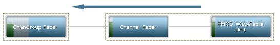
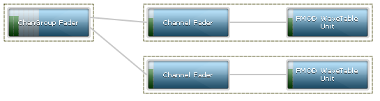
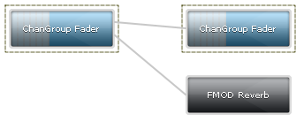
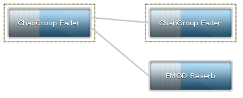
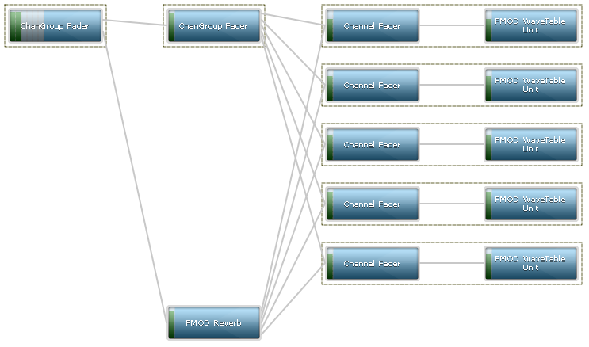
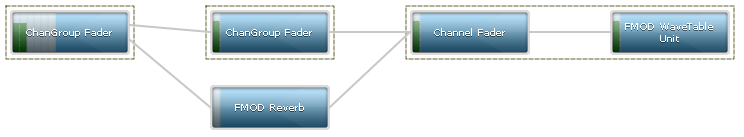
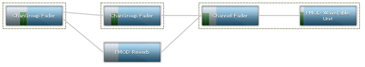
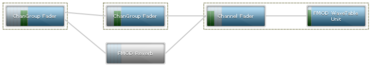

FMOD API User Manual 2.01
5. White Papers | DSP Architecture and Usage
- DSP Architecture and Usage
- Introduction
- Some common units in a DSP network
- Watch a DSP network get built (with code examples)
- Start off with nothing, then play some sounds
- Add a DSP effect to a Channel
- Add an effect to the ChannelGroup
- Creating an effect and making all Channels send to it.
- Set the output format of a DSP unit, and control the pan matrix for its output signal
- Bypass an effect / disable it.
- Order of execution and pull / no pull traversal
- 'Send' vs 'Standard' connection type
DSP Architecture and Usage
Introduction
This section will introduce you to the FMOD Studio advanced DSP system. With this system you can implement custom filters or create complicated signal chains to create high quality and dynamic sounding audio. The FMOD Studio DSP system is an incredibly flexible mixing engine that has an emphasis on quality, flexibility and efficiency, and makes it an extremely powerful system when used to its full potential.
The figure below shows a representation of what a very basic FMOD DSP network looks like.

Audio data flows from the right to the left, until it finally arrives at the soundcard, fully mixed and processed.
- A blue box is an DSP unit. This unit is represented by the DSP class in the FMOD core header.
- A line between the boxes, is an DSPConnection. This is what links the DSP units together into a network. Each DSPConnection has a pan matrix which you can use to configure the mapping from input speakers/channels to output speakers/channels.
- The green vertical bars inside the grey bars are detected signal levels. You can see that the WaveTable unit produces a mono signal, that mono signal continues through the Channel Fader (untouched) then gets upmixed to 6 channels (5.1). Because the default pan for a mono sound to a 5.1 output is to have the mono signal attenuated by 3db to the Front Left speaker, and the signal attenuated by 3db to the Front Right speaker, you can see that the 6 grey bars have only signal in the first 2 speaker levels. See FMOD_SPEAKER for the speaker order, represented by those bars. Note: Since FMOD Studio 1.04.08, the upmix happens internally, beyond the master ChannelGroup's fader, so for the purposes of this tutorial, the master ChannelGroup's fader has been forced to FMOD_SPEAKERMODE_5POINT1 so that it can be visualized. More about channel formats can be read below in the "Set the output format of a DSP unit, and control the pan matrix for its output signal" section.
The above image was taken using the FMOD Profiler tool. You can profile your own DSP network as long as you specify FMOD_INIT_PROFILE_ENABLE when initializing the core engine. The tool is located in the /bin directory of the SDK.
Some common units in a DSP network
This section will describe the units in more detail, from the origin of the data through to the soundcard, from right to left. The following list describes some of the typical DSP units you will see in a graph.
- Wavetable Unit This unit reads raw PCM data from the sound buffer and resamples it to the same rate as the soundcard. A Wavetable Unit is only connected when the user calls System::playSound. Once resampled, the audio data is then processed (or flows) at the rate of the soundcard. This is usually 48khz by default. (22khz on iOS)
- DSPCodec Unit This unit reads decodes compressed data from an FMOD Codec, and passes it to a built in resampler, and then passes the decompressed result to the output.
- Channel Fader This unit provides a top level unit for a Channel to hold onto, and is a place to insert effects for a Channel. A Channel Fader also controls the volume level of a Channel, for example if the user calls ChannelControl::setVolume.
- ChannelGroup Fader This unit provides a top level unit for a ChannelGroup to hold onto, and is a place to insert effects for a ChannelGroup. A ChannelGroup Fader also controls the volume level of a Channel, for example if the user calls ChannelControl::setVolume.
When FMOD plays a PCM sound on a Channel (using System::playSound), it creates a small sub-network consisting of a Fader and a Wavetable Unit. This would also happen if playing a stream, even if the source data is compressed.
When FMOD plays a compressed sound on a Channel (MP3/Vorbis/XMA/ADPCM usually, loaded with FMOD_CREATECOMPRESSEDSAMPLE), it creates a similar small sub-network consisting of a Fader and a DSPCodec Unit.
When FMOD plays a DSP on a Channel (using System::playDSP), it creates a small sub-network consisting of a Fader and a standalone Resampler Unit. The DSP that was specified by the user executed by the resampler as a sub-network to the resampler, and is not visible on the profiler.
Watch a DSP network get built (with code examples)
Start off with nothing, then play some sounds
In this section we will look at some basic techniques that can be used to manipulate DSP network. We shall start with the most basic signal chain (as shown in the image below) and identify the changes that occur to the DSP network with the provided code.
Note that the network only exists of 1 unit. The Master ChannelGroup's DSP Fader Unit (FMOD_DSP_TYPE_FADER). This unit can be used to control the mix output of the entire mix if desired.
Now we shall play a PCM sound with System::playSound.
Note that the sub-network of a DSP Fader unit (FMOD_DSP_TYPE_FADER), and a system level DSP WaveTable unit have been attached to the Master ChannelGroup's DSP Fader unit.
Let's play the sound again, resulting in 2 channels being active.

Note now that the new Channel targets the same Master ChannelGroup DSP Fader unit, and when 2 lines merge into 1 unit, a 'mix' happens. This is just a summing of the 2 signals together.
Add a DSP effect to a Channel
In this example we shall add an effect to a sound by connecting a DSP effect unit to the Channel. The code below starts by playing a sound, then creates a DSP unit with System::createDSPByType and adds it to the DSP network using ChannelControl::addDSP.
FMOD::Channel *channel;
FMOD::DSP *dsp_echo;
result = system->playSound(sound, 0, false, &channel);
result = system->createDSPByType(FMOD_DSP_TYPE_ECHO, &dsp_echo);
result = channel->addDSP(0, dsp_echo);
The figure below shows the FMOD Echo effect inserted at the 'Channel head' or position 0, as specified with the ChannelControl::addDSP command (position = 0). The Channel Fader which used to be the head unit, is now shuffled down to position 1.
If we call ChannelControl::setDSPIndex
result = channel->setDSPIndex(dsp_echo, 1);
We can see below, that the echo has now moved down one, and Channel Fader is back at position 0.
Create a new ChannelGroup and add our Channel to it
In this example we shall introduce ChannelGroups which are effectively used as sub-mix buses. We can add an effect to a ChannelGroup and if Channels are assigned to that ChannelGroup, all Channels will be affected by any DSP inserted into a ChannelGroup.
These ChannelGroups can then be nested and manipulated to create hierarchical mixing.
result = system->createChannelGroup("my channelgroup", &channelgroup);
result = channel->setChannelGroup(channelgroup);
We can now see the newly created ChannelGroup as a stand-alone DSP ChannelGroup Fader between the channel on the right and the Master ChannelGroup Fader on the left.
Add an effect to the ChannelGroup
Adding an effect to a ChannelGroup is the same as adding one to a Channel. Use ChannelControl::addDSP.
FMOD::DSP *dsp_lowpass;
result = system->createDSPByType(FMOD_DSP_TYPE_LOWPASS, &dsp_lowpass);
result = channelgroup->addDSP(1, dsp_lowpass);
We can now see as before, an effect attached to a ChannelGroup Fader, in position 1, the entirety of the ChannelGroup being symbolized by the box around the 2 units.
Creating an effect and making all Channels send to it.
This example demonstrates a more complex, and somewhat typical scenario, in which we create a new effect, and every time a Sound plays on a Channel, we connect the new channel to the effect.
Important note! Please don't use this example as a standard way to set up reverb. Simply call System::setReverbProperties instead and all connection logic is handled automatically. Note the following logic does not handle what happens when a voice goes virtual and is removed from the graph, only to return later. You would only normally use this logic if you wanted to control the 'wet' mix levels indivudually for an effect, per channel. Otherwise a simple ChannelControl::addDSP would suffice.
The first step is to add an effect to the master ChannelGroup. We do this by calling System::createDSPByType again, and then using the DSP API to manually add connections.
FMOD::DSP *dsp_reverb;
FMOD::DSP *dsp_tail;
FMOD::ChannelGroup *channelgroup_master;
result = system->createDSPByType(FMOD_DSP_TYPE_SFXREVERB, &dsp_reverb); /* Create the reverb DSP */
result = system->getMasterChannelGroup(&channelgroup_master); /* Grab the master ChannelGroup / master bus */
result = channelgroup_master->getDSP(FMOD_CHANNELCONTROL_DSP_TAIL, &dsp_tail); /* Grab the 'tail' unit for the master ChannelGroup. This is the last DSP unit for the ChannelGroup, in case it has other effects already in it. */
result = dsp_tail->addInput(dsp_reverb);
This will result in

Note that the ChannelGroup from before is still there. This is what the Channels will be playing on. The reason we have a ChannelGroup here for this example is to keep the Channels executing first in the graph, then the reverb second. This raises a topic called 'order of execution' which you can find more information about below and way it may or may not be important to you.
Also note that the reverb is black. This means it is inactive / disabled. All units are inactive by default, so we have to activate them. You can do this with DSP::setActive.
result = dsp_reverb->setActive(true);

Now you can see that the reverb has gone from black/inactive to active.
Now we will play a sound on multiple channels with the following code. The code plays the sound paused, gets its Channel DSP head unit, adds the Channel DSP head unit to the reverb, then unpauses the sound.
FMOD::DSP *channel_dsp_head;
result = system->playSound(sound, channelgroup, true, &gChannel[0]); /* Play the sound. Play it paused so we dont hear the sound play before it is connected to the reverb. */
result = channel->getDSP(FMOD_CHANNELCONTROL_DSP_HEAD, &channel_dsp_head); /* Grab the 'head' unit for the Channel */
result = dsp_reverb->addInput(channel_dsp_head); /* Manually add a connection from the Channel DSP head to the reverb. */
result = channel->setPaused(false); /* Unpause the channel and let it be audible. */
Note that calling ChannelControl::setPaused internally just calls DSP::setActive on the Channel's head DSP unit.
Here is the result

The interesting parts here are that the Channel DSP head units now have 2 outputs per channel, and each set of outputs mix to the user created ChannelGroup first, before being passed as the 'dry' signal to the output. The second set of outputs can be considered the 'wet' path and similarly mix to the reverb unit, before being processed by the reverb processor.
Controlling mix level and pan matrices for DSPConnections
Each connection between an DSP unit is represented by an DSPConnection object. This is the line between the boxes.
The primary purpose of this object type is to allow the user to control the volume / mix level between 2 processing units, and also to control the speaker / channel mapping between 2 units, so that a signal can be panned, and input signals mapped to any output signal, in any way that is needed.
Lets go back to the example above, but with 1 voice, and change its wet mix from the Channel to the reverb from 1.0 (0db) to 0.0 (-80db)
The code around the playsound would have one difference, and that is that addInput will also take a pointer to the resulting DSPConnection object.
FMOD::DSP *channel_dsp_head;
FMOD::DSPConnection *dsp_connection;
result = system->playSound(sound, channelgroup, true, &gChannel[0]); /* Play the sound. Play it paused so we dont hear the sound play before it is connected to the reverb. */
result = channel->getDSP(FMOD_CHANNELCONTROL_DSP_HEAD, &channel_dsp_head); /* Grab the 'head' unit for the Channel */
result = dsp_reverb->addInput(channel_dsp_head, &dsp_connection); /* Manually add a connection from the Channel DSP head to the reverb. */
result = channel->setPaused(false); /* Unpause the channel and let it be audible. */
We can then update the volume simply with DSPConnection::setMix.
result = dsp_connection->setMix(0.0f);

You can see there is no signal level in the meter for the reverb, because the only input to it is silent.
Set the output format of a DSP unit, and control the pan matrix for its output signal
In this section we will grab the first output from the channel_dsp_head and apply a pan matrix to it, to allow mapping of input signal to any output speaker within the mix.
The first thing to note, is that the Channel Fader outputs mono to the ChannelGroup Fader. This means there's not much to map from and too here. Any matrix representing this signal will be 1 in and 1 out.
To make it more interesting, we can change the output format of a DSP Unit with DSP::setChannelFormat.
result = channel_dsp_head->setChannelFormat(0, 0, FMOD_SPEAKER_QUAD);
Here is the result

You will notice that the ChannelFader now outputs 4 channels, and this gets propagated through the network. A Quad to 5.1 pan has a different default upmix than mono to 5.1, so you will see that the fronts are now slightly lower on the final ChannelGroup Fader unit, and there is some signal now introduced into the Surround Left and Surround Right speakers. Now we will use some code to do something interesting, we will put the newly quad ChannelFader signal's front 2 channels into the rear 2 speakers of the quad output.
FMOD::DSPConnection *channel_dsp_head_output_connection;
float matrix[4][4] =
{ /* FL FR SL SR <- Input signal (columns) */
/* row 0 = front left out <- */ { 0, 0, 0, 0 },
/* row 1 = front right out <- */ { 0, 0, 0, 0 },
/* row 2 = surround left out <- */ { 1, 0, 0, 0 },
/* row 3 = surround right out <- */ { 0, 1, 0, 0 }
};
result = channel_dsp_head->getOutput(0, 0, &channel_dsp_head_output_connection);
result = channel_dsp_head_output_connection->setMixMatrix(&matrix[0][0], 4, 4);

We can now see that the first 2 channels are now silent on the output because they have 0s in the matrix where the first 2 input columns map to the first 2 output columns.
Instead the first 2 input columns have 1s where the rows map to the surround left and surround right output speakers.
Bypass an effect / disable it.
To disable an effect simply use the setBypass method. The code below plays a sound, adds an effect then bypasses it.
result = dsp_reverb->setBypass(true);
This has the benefit of not disabling all input units like DSP::setActive with false as the parameter would, and allows the signal to pass through the reverb unit untouched (The reverb process function is not called, saving CPU).

The bypassed reverb is represented as greyed out.
Note that many FMOD effects automatically bypass themselves, saving CPU, after no signal, or silence is detected and the effective 'tail' of the effect has played out.
Order of execution and pull / no pull traversal
The order of execution for a DSP graph is from right to left, but also top to bottom. Units at the top will get executed before units at the bottom.
Sometimes it is undesirable to have a user created effect execute the DSP units for the channel, rather than the ChannelGroup it belongs to. This typically doesn't matter, but one case where it would matter is if the user called ChannelControl::setDelay on the channel or ChannelControl::setDelay on a parent ChannelGroup, to make the sound delay before starting.
The reverb unit has no concept of the delay because the clock it is delaying against is stored in the ChannelGroup it belongs to.
The result is that the reverb will pull the signal and be audible through the reverb processor, and the dry path will still be silent because it is in a delay state.
The workaround in the above reverb example, is to attach the reverb to the master ChannelGroup after the ChannelGroup the Channels will play on is created, so that the ChannelGroup executes first, and the reverb second.
'Send' vs 'Standard' connection type
A second workaround is to stop the reverb pulling data from its inputs. This can be done by using the FMOD_DSPCONNECTION_TYPE 'type' parameter for DSP::addInput. If FMOD_DSPCONNECTION_TYPE_SEND is used instead of FMOD_DSPCONNECTION_TYPE_STANDARD, the inputs are not executed, and all the reverb would do is process whatever is mixed to it from a previous traversal to the inputs.
The delay will then work, but the downside to this method is that if the reverb is first, the signal from the channels will be sent after the reverb has processed. This means it will have to wait until the next mix before it can process that data, therefore 1 mix block of latency is introduced to the reverb.